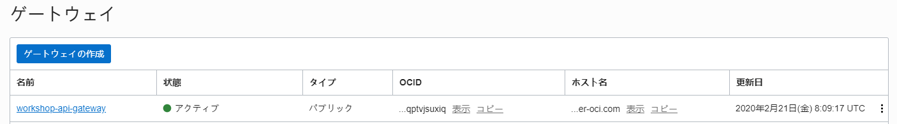

Oracle Cloud Infrasturcture API Gateway + Oracle Functionsハンズオン¶
このエントリーでは、OCI API GatewayとOracle Functionsを組み合わせて、 簡単なサーバレスアプリケーションを開発する手順をご紹介します。
条件¶
-
クラウド環境
- 有効なOracle Cloudアカウントがあること
-
事前環境構築
- Oracle Functionsことはじめが完了していること
全体の流れ¶
手順の大まかな流れは以下のとおりです。
- サンプルアプリケーションのデプロイ
・このステップでは、事前にデプロイされたQRコードを生成するFunctionsのアプリケーションをデプロイします - OCI API Gatewayプロビジョニングの事前準備
・このステップでは、OCI API Gatewayを構成するための事前設定を行います - OCI API GatewayへのOracle Functionsへのデプロイと動作確認
・このステップでは、OCI API GatewayにFunctionsをデプロイし、簡易的に構築したWebサーバ上のHTMLから動作確認を行います
1.サンプルアプリケーションのデプロイ¶
ここでは、サンプルアプリケーションのデプロイを行います。
ここでデプロイするFunctionは、渡されたパラメータを使用して、QRコードの画像を作成するアプリケーションです。
まずは、githubからハンズオン用の資材をcloneします。
Oracle Functionsことはじめで作成したDeveloper Imageのコンピュートインスタンスにログインします。
ルートユーザに変更します。
sudo su -
以下のコマンドを実行します。
git clone https://github.com/oracle-japan/apigw-functions-handson.git
apigw-functions-handsonディレクトリに移動します。
cd apigw-functions-handson
Oracle Functionsを使用してFunctionをデプロイします。
fn-generate-qrcodeディレクトリに移動します。
cd fn-generate-qrcode
fn-generate-qrcodeをデプロイします。
fn -v deploy --app helloworld-app
最後に以下のような出力が得られます：
~~~略~~~
Updating function fn-generate-qrcode using image nrt.ocir.io/xxxxxxxx/workshop/fn-generate-qrcode:0.0.2...
Successfully created function: fn-generate-qrcode with nrt.ocir.io/xxxxxxxx/workshop/fn-generate-qrcode:0.0.2
これで、Functionsのデプロイは完了です。
2.OCI API Gatewayプロビジョニングの事前準備¶
ここでは、OCI API Gatewayをプロビジョニングするための事前準備を行います。
2-1.イングレス・ルールの追加¶
OCI API Gatewayは、デフォルトでは開いていないポート443で通信します。 ポート443のトラフィックを許可するには、サブネットに対してイングレス・ルールを追加する必要があります。
OCIコンソールにログインし、[ネットワーキング]に移動して、[仮想クラウド・ネットワーク]をクリックします。
[コンパートメント]からOCI API Gatewayで利用するコンパートメント(今回はルートコンパートメント)を選択して、OCI API Gatewayで利用するVCNリンクをクリックします。
VCNはOracle Functionsことはじめで作成したVCNを利用してください。
OCI API Gatewayで利用するサブネットリンクをクリックします。
今回は、パブリックサブネット("Oracle Functions Handson"で作成した場合は"パブリック・サブネット-Oracle Functions Handson(リージョナル)")を選択してください。
[Default Security List for ...]リンクをクリックします。
[イングレス・ルールの追加]をクリックします。
以下項目を入力して、[イングレース・ルールの追加]をクリックします。
- ステートレス：チェックをオフにする（デフォルト値）
- ソースCIDR：
0.0.0.0/0 - IPプロトコル：
TCP（デフォルト値） - 宛先ポート範囲：
443
新しいイングレス・ルールが追加されます。
2-2.動的ポリシーの作成¶
OCI API GatewayでOracle Functionsを利用するための動的ポリシーの作成を行います。
補足:動的グループおよびポリシーについて
動的グループを使用すると、Oracle Cloud Infrastructureコンピュータ・インスタンスを(ユーザー・グループと同様に)プリンシパルのアクターとしてグループ化し、ポリシーを作成できます。 そうすることで、インスタンスがOracle Cloud Infrastructureサービスに対してAPIコールを実行できるようにします。 詳細は動的グループの管理をご確認ください。
- 動的グループを作成します。
OCIコンソールにログインし、[アイデンティティ]をクリックして、[動的グループ]をクリックします。
[動的グループの作成]をクリックします。
以下項目を入力して、[動的グループの作成]をクリックします。
- 名前：任意。今回は
api_gw_grp - 説明：任意。今回は
API Gateway Dynamic Group - ルール1：
<compartment-ocid>は[アイデンティティ]⇒[コンパートメント]に移動して、OCI API Gatewayで使用するコンパートメント(今回はルートコンパートメント)を開いて、該当OCIDを記入します。ALL {resource.type = 'ApiGateway', resource.compartment.id = '<compartment-ocid>'}
- ポリシーを作成します。
OCIコンソールにログインし、[アイデンティティ]をクリックして、[ポリシー]をクリックします。
[コンパートメント]からOCI API Gatewayで利用するコンパートメント(今回はルートコンパートメント)を選択して、[ポリシーの作成]をクリックします。
以下項目を入力して、[作成]をクリックします。
- 名前：任意。今回は
APIGW_Policy - 説明：任意。今回は
APIGW_Policy - ポリシーのバージョニング：
ポリシーを最新の状態に維持を選択 - ポリシー・ステートメント：以下のポリシーを入力します。
Allow dynamic-group api_gw_grp to use functions-family in tenancy
以上で、OCI API Gatewayプロビジョニングの事前準備は完了です。
3.OCI API GatewayへのOracle Functionsへのデプロイと動作確認¶
3-1.OCI API Gatewayの作成¶
OCIコンソールにログインし、[開発者サービス]に移動して、[APIゲートウェイ]をクリックしてから、次の操作を行います。
[ゲートウェイの作成]をクリックして、次を指定します。
-
名前：新しいゲートウェイの名前。今回は、"workshop-api-gateway"
-
タイプ：パブリック
-
コンパートメント：OCI API Gatewayリソースを作成するコンパートメントの名前。今回はルートコンパートメントを指定。
-
仮想クラウド・ネットワーク：OCI API Gatewayで使用するVCNの名前。今回は、Oracle Functionsことはじめで作成したVCNを指定してください。
-
サブネット：VCNのサブネットの名前。今回は、Oracle Functionsことはじめで作成したVCNのパブリック・サブネットを指定してください。
[作成]をクリックします。
新しいAPIゲートウェイが作成されると、[ゲートウェイ]ページのリストにアクティブと表示されます。
アクティブになるまでには5-10分程度かかることがあります。

3-2.OCI API GatewayへのOracle Functionsへのデプロイ¶
[ゲートウェイ]ページで、前に作成したAPIゲートウェイの名前をクリックします。
画面左側にあるメニューの[リソース]で[デプロイメント]をクリックし、[デプロイメントの作成]をクリックします。
[最初から]をクリックし、[APIリクエスト・ポリシー]内の[CORS]セクションの[追加]をクリックします。
後続の手順で構築するWebサーバからOCI API Gatewayへのアクセスを許可するために以下の設定を行います。
[オリジン]内の[許可されるオリジン]に*と入力し、[変更の保存]をクリックします。
[基本情報]については以下を入力します。
- 名前：新しいAPIデプロイメントの名前。今回は、workshop-api-deployment
- パス接頭辞：APIデプロイメントに含まれるすべてのルートのパスに追加するパスプレフィックス。今回は
/v1 - コンパートメント：新しいAPIデプロイメントを作成するコンパートメント(今回はルートコンパートメント)
以下のような状態になっていれば問題ありません。[次]をクリックします。
補足:CORSについて
オリジン間リソース共有Cross-Origin Resource Sharing (CORS) は、追加の HTTP ヘッダーを使用して、あるオリジンで動作しているウェブアプリケーションに、異なるオリジンにある選択されたリソースへのアクセス権を与えるようブラウザーに指示するための仕組みです。
呼び出し元から異なるドメインへのリソースへアクセスを行うためにはCORSの設定が必要になります。
今回はハンズオンをスムーズに体験頂くために*を指定しましたが、実際は適切なオリジン名を入力する必要があります。
詳細はオリジン間リソース共有 (CORS)をご確認ください。
[1のルーティング]セクションで次を指定して、[次]をクリックします。
- パス：APIのパス。今回は、/fn-generate-qrcode
- メソッド：APIのメソッドを指定します。今回は、
GET - タイプ：バックエンド・サービスのタイプを指定します。今回は、
Oracle Functions - アプリケーション：Oracle Functionsのアプリケーションを指定します。今回は、
helloworld-app - 機能名：Oracle Functionsの機能名を指定します。今回は、
fn-generate-qrcode

新しいAPIデプロイメント用に入力した詳細を確認し、[作成]をクリックして作成します。
新しいAPIデプロイメントが作成されると、APIデプロイメントのリストにアクティブとして表示されます。
APIデプロイメントのリストで、作成したばかりの新しいAPIデプロイメントのエンドポイントの横にある[コピー]をクリックして、エンドポイントをコピーし、テキストエディタ等に保持しておきます。
エンドポイントは以下のようになります。
https://xxxxxxxxxxxxxxxxxxxxxxxxxxxxx.apigateway.ap-tokyo-1.oci.customer-oci.com/v1
3-3.動作確認¶
今回のハンズオンでは、サンプルアプリケーションを利用して、OCI API Gateway経由でOracle Functionsを呼び出します。
先ほどgithubからcloneした資材を利用します。
Oracle Functionsことはじめで作成したコンピュートインスタンスにログインします。
ルートユーザに変更します。
sudo su -
apigw-functions-handsonディレクトリ(git cloneした資材ディレクトリ)に移動します。
cd apigw-functions-handson/front-app
サンプルアプリケーションのmain.jsにあるAPI_URLを修正します。
vi js/main.js
3行目のAPI_URLを修正します。
1 2 3 4 5 6 7 8 9 10 11 12 13 14 15 16 17 18 19 20 21 | |
API_URLはhttps://<OCI API Gatewayのエンドポイント>/<パス接頭辞>/<APIのパス>の形式になります。
今回は以下の形式になります。<APIデプロイメントのエンドポイント>を手順3－2でコピーしたエンドポイントに修正してください。
const sampleURL = "<APIデプロイメントのエンドポイント>/fn-generate-qrcode?contents=";
例えば以下のようになります。(XXXXの部分は各自のOCI API Gatewayのエンドポイントにより異なります)
const sampleURL = "https://XXXXXXXXXXXXXXXXXXXXXXXXX.apigateway.ap-tokyo-1.oci.customer-oci.com/v1/fn-generate-qrcode?contents=";
サンプルアプリケーションをHTTPサーバーへデプロイします。
HTTPサーバーをインストールします。
sudo yum install -y httpd
サンプルアプリケーションを/var/www/htmlへコピーします。
sudo cp -r ./* /var/www/html/
HTTPサーバーを起動します。
sudo systemctl start httpd
HTTPサーバーのデフォルトポート80で通信を行うようにするためにイングレスルールを追加します。
OCIコンソールにログインし、[ネットワーキング]に移動して、[仮想クラウド・ネットワーク]をクリックします。
[コンパートメント]からOCI API Gatewayで利用するコンパートメント(今回はルートコンパートメント)を選択して、OCI API Gatewayで利用するVCNリンクをクリックします。
VCNはOracle Functionsことはじめで作成したVCNを利用してください。
OCI API Gatewayで利用するサブネットリンクをクリックします。
今回は、パブリックサブネット("Oracle Functions Handson"で作成した場合は"パブリック・サブネット-Oracle Functions Handson(リージョナル)")を選択してください。
[Default Security List for ...]リンクをクリックします。
[イングレス・ルールの追加]をクリックします。
以下項目を入力して、[イングレース・ルールの追加]をクリックします。
- ステートレス：チェックをオフにする（デフォルト値）
- ソースCIDR：
0.0.0.0/0 - IPプロトコル：
TCP（デフォルト値） - 宛先ポート範囲：
80
新しいイングレス・ルールが追加されます。
また、コンピュートインスタンス側ののFirewallについてもポート80で通信できるように設定します。
sudo firewall-cmd --add-port=80/tcp --permanent
sudo firewall-cmd --reload
ブラウザーを開き、コンピュートインスタンスのパブリックIPでアクセスします。サンプルアプリケーションが表示されます。
QRコードを作成してみます。以下項目にそれぞれのテスト内容を入力して、それぞれの[QAコード生成]をクリックします。
-
メッセージ：oracle
-
電話番号：08012345678
-
Webページ：www.oracle.com
-
SMS通知番号を入力してください：08012345678
-
SMS通知内容を入力してください：oracle
それぞれのQRコードが作成されます。QRコードをクリックして、ダウンロードできます。
手元にあるスマートフォンでスキャンして、電話するとか、Webページに移動するとかの機能が実行されます。（以下の画像にあるQRコードをスキャンできます）
これで、OCI API GatewayとOracle Functionsを利用した簡単なサーバレスアプリケーションが構築できました。
お疲れ様でした！